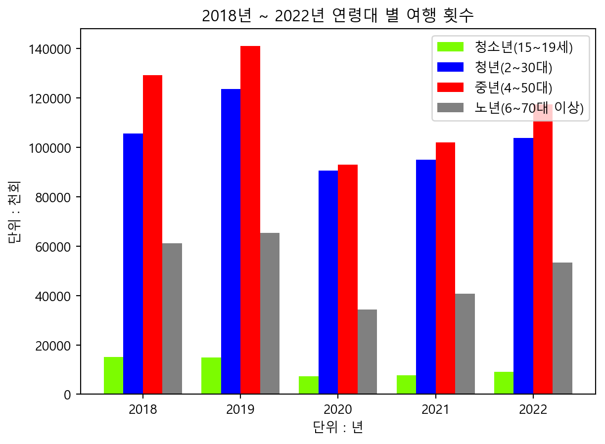
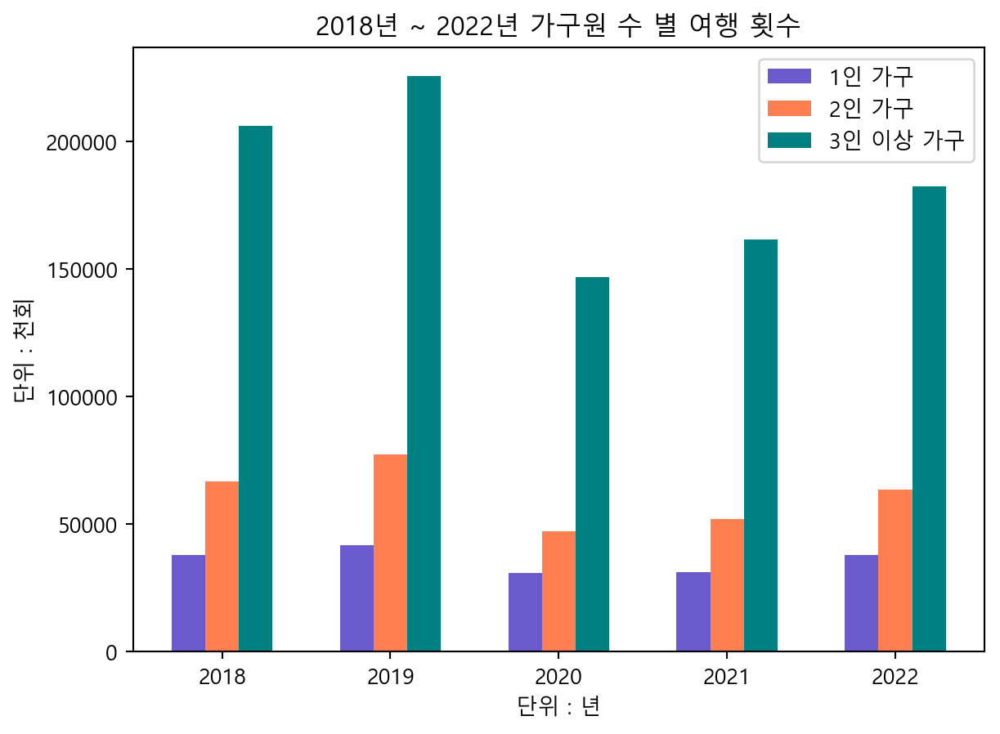

# 라이브러리 호출
import pandas as pd
import numpy as np국내 여행 횟수
Data Preprocessing : 데이터 전처리
pandas와 numpy 라이브러리 호출
pd.read_excel()을 사용해 데이터 불러온 후 num_trip이라는 DataFrame생성
Data 저장 경로 규칙
원본 데이터 : data 폴더의 R_월별_국내여행_횟수_20240714204514.xlsx
전처리 이후 데이터 : pre_data 폴더의 p_num_trip.xlsx
# header를 두번째 행으로 고정, 첫번째 행에는 불필요한 정보가 들어있기 때문
num_trip = pd.read_excel('data/R_월별_국내여행_횟수_20240714204514.xlsx', header=1)rename()을 사용하여 열(columns)의 변수명 변경
# 시점
num_trip = num_trip.rename(columns = { '시점' : 'year', '항목' : 'month'})
# 전체
num_trip = num_trip.rename(columns = { '소계' : 'total'})
# 성별
num_trip = num_trip.rename(columns = { '남자' : 'male', '여자' :'female'})
# 학력
num_trip = num_trip.rename(columns = { '초졸 이하' : 'elmt', '중학교' : 'mid',
'고등학교' : 'high', '대학교이상' : 'univ+'})
# 가구원수
num_trip = num_trip.rename(columns = { '1인' : 'per1',
'2인' : 'per2',
'3인이상' : 'per3+'})열(columns)의 파생변수 생성
연령 - 15~19세, 20대, 30대, 40대, 50대, 60대, 70세 이상을 청소년, 청년, 중년, 노년 층으로 구분
num_trip["teens"] = num_trip["15~19세"]
num_trip["young_adults"] = num_trip["20대"] + num_trip["30대"]
num_trip["middle_adults"] = num_trip["40대"] + num_trip["50대"]
num_trip["seniors"] = num_trip["60대"] + num_trip["70세 이상"]drop()을 사용하여 기존의 연령 열 삭제
np.arrange를 사용하여 columns의 index 지정(5,12,1) 총 15~19세, 20대, 30대, 40대, 50대, 60대, 70세 이상 열 7개 삭제
# 15~19세, 20대, 30대, 40대, 50대, 60대, 70세 이상 열 7개 삭제
num_trip = num_trip.drop(num_trip.columns[np.arange(5,12,1)], axis=1)가구 소득
저소득 ~ 200 만원 / 중위소득 200~500 만원 / 고소득 500~600이상 / 무응답
num_trip["l_sal"] = num_trip["100만원 미만"] + num_trip["100~200만원 미만"]
num_trip["m_sal"] = num_trip["200~300만원 미만"] + num_trip["300~400만원 미만"] + num_trip["400~500만원 미만"]
num_trip["h_sal"] = num_trip["500~600만원 미만"] + num_trip["600만원 이상"]
num_trip["nr"] = num_trip["무응답"]drop()을 사용하여 기존의 가구 소득 열 삭제
np.arrange를 사용하여 columns의 index 지정(24,32,1) 총 100만원 미만, 100~200만원 미만, 200~300만원 미만, 300~400만원 미만, 400~500만원 미만, 500~600만원 미만, 600만원 이상, 무응답 총 8열 삭제
num_trip = num_trip.drop(num_trip.columns[np.arange(24,32,1)], axis=1)열(columns) 삭제
직업 - 직업과 여행 횟수간의 상관관계가 크게 없다고 판단하여 임금봉급근로자, 고용원있는사업주, 고용원없는자영업자, 무급가족 종사자, 사무전문, 기술생산노무, 판매서비스, 자영업, 학생, 전업주부, 무직은퇴, 기타 총 12개의 열 삭제
drop()과 np.arrange를 사용하여 columns의 index 지정(5,17,1)
num_trip = num_trip.drop(num_trip.columns[np.arange(5,17,1)], axis=1)데이터 전처리 시 예상 결과
데이터 전처리 시
원본 : 39개 열, 파생변수 : 4 + 4 = 8 개열 생성, 열 삭제 : 27개 열 삭제 → 총 39 + 4 + 4 - 27 = 20 개의 columns이 생성됩니다.
| <<<<< | << HEAD | 하기 - info(), s | hape, head(), tail(), describe() 이용 |
|---|---|---|---|
| 0 1 2 3 4 5 6 7 8 9 10 11 12 13 14 15 16 17 18 19 dtype memor ``` ::: ::: | year month total male female elmt mid high univ+ per1 per2 per3+ teens young_adults middle_adults seniors l_sal m_sal h_sal nr s: float64(1), y usage: 9.5+ K | 5 non-null 60 non-null 60 non-null 60 non-null 60 non-null 60 non-null 60 non-null 60 non-null 60 non-null 60 non-null 60 non-null 60 non-null 60 non-null 60 non-null 60 non-null 60 non-null 60 non-null 60 non-null 60 non-null 60 non-null int64(17), objec B | float64 object int64 int64 int64 int64 int64 int64 int64 int64 int64 int64 int64 int64 int64 int64 int64 int64 int64 object t(2) |
::: { { num_t |
#0664f974 .cell .python .cell-c rip.shape | execution_count ode} | =10} |
| ::: { | .cell-output .c | ell-output-displ | ay execution_count=10} |
::: { { num_t |
#ccbb6dbf .cell .python .cell-c rip.describe() | execution_count ode} | =11} |
| ::: { | .cell-output .c | ell-output-displ | ay execution_count=11} |
| ```{= | html} | ||
| . | dataframe tbody vertical-ali | tr th { gn: top; | |
| . | dataframe thead text-align: | th { right; | |
| ::: ::: | |||
::: { { num_t |
#f6416ac5 .cell .python .cell-c rip.head(12) | execution_count ode} | =12} |
| ::: { | .cell-output .c | ell-output-displ | ay execution_count=12} |
| ```{= | html} | ||
| . | dataframe tbody vertical-ali | tr th { gn: top; | |
| . | dataframe thead text-align: | th { right; | |
| ::: ::: | |||
::: { { num_t |
#ed62b265 .cell .python .cell-c rip.tail(12) | execution_count ode} | =13} |
| ::: { | .cell-output .c | ell-output-displ | ay execution_count=13} |
| ```{= | html} | ||
| . | dataframe tbody vertical-ali | tr th { gn: top; | |
| . | dataframe thead text-align: | th { right; | |
| ::: ::: |
======= >>>>>>> eaac52da361298b09f7c74978f59c40e097c864a
그 외의 전처리 방법
1. year의 NaN값을 채워야함
# year의 null값 index 범위를 지정하고 2018, 2019, 2020, 2021, 2022 값 할당
num_trip['year'][1 :12] = 2018
num_trip['year'][13:24] = 2019
num_trip['year'][25:36] = 2020
num_trip['year'][37:48] = 2021
num_trip['year'][49:60] = 2022C:\Users\USER\AppData\Local\Temp\ipykernel_6132\870468280.py:2: SettingWithCopyWarning:
A value is trying to be set on a copy of a slice from a DataFrame
See the caveats in the documentation: https://pandas.pydata.org/pandas-docs/stable/user_guide/indexing.html#returning-a-view-versus-a-copy
C:\Users\USER\AppData\Local\Temp\ipykernel_6132\870468280.py:3: SettingWithCopyWarning:
A value is trying to be set on a copy of a slice from a DataFrame
See the caveats in the documentation: https://pandas.pydata.org/pandas-docs/stable/user_guide/indexing.html#returning-a-view-versus-a-copy
C:\Users\USER\AppData\Local\Temp\ipykernel_6132\870468280.py:4: SettingWithCopyWarning:
A value is trying to be set on a copy of a slice from a DataFrame
See the caveats in the documentation: https://pandas.pydata.org/pandas-docs/stable/user_guide/indexing.html#returning-a-view-versus-a-copy
C:\Users\USER\AppData\Local\Temp\ipykernel_6132\870468280.py:5: SettingWithCopyWarning:
A value is trying to be set on a copy of a slice from a DataFrame
See the caveats in the documentation: https://pandas.pydata.org/pandas-docs/stable/user_guide/indexing.html#returning-a-view-versus-a-copy
C:\Users\USER\AppData\Local\Temp\ipykernel_6132\870468280.py:6: SettingWithCopyWarning:
A value is trying to be set on a copy of a slice from a DataFrame
See the caveats in the documentation: https://pandas.pydata.org/pandas-docs/stable/user_guide/indexing.html#returning-a-view-versus-a-copy
2. month의 type을 object에서 int로 형 변환 필요
# str.replace()를 사용해서 맨 마지막 글자인 '월'을 ''로 변경
# astype('int')를 사용하여 int값으로 형 변환
num_trip['month'] = num_trip['month'].str.replace('월','')
num_trip['month'] = num_trip['month'].astype('int')3. nr(월급 미 응답자) columns의 NaN값이 ’-’로 대응되어 있음
# loc을 사용하여 nr 컬럼의 값이 "-"인 nr열의 값에 np.nan을 할당
num_trip.loc[num_trip["nr"] == "-", ["nr"]] = np.nan데이터 저장
# to_excel()을 사용하여 DataFrame을 xlsx파일 형태로 저장
# index=False : Unnamed: 0 이라는 임의의 인덱스가 생성되는 것을 방지
num_trip.to_excel(excel_writer = 'pre_data/p_num_trip.xlsx', index=False)Data Visualization : 데이터 시각화
pandas와 numpy 라이브러리 호출
# 라이브러리 호출
import pandas as pd
import numpy as nppd.read_excel()을 사용해 전처리 된 데이터 불러오기
# 전처리 된 데이터 불러오기
p_num_trip = pd.read_excel('pre_data/p_num_trip.xlsx')p_num_trip.xlsx 데이터의 정보 확인하기 - info(), shape, head(), tail(), describe() 이용
p_num_trip.info()<class 'pandas.core.frame.DataFrame'>
RangeIndex: 60 entries, 0 to 59
Data columns (total 20 columns):
# Column Non-Null Count Dtype
--- ------ -------------- -----
0 year 60 non-null int64
1 month 60 non-null int64
2 total 60 non-null int64
3 male 60 non-null int64
4 female 60 non-null int64
5 elmt 60 non-null int64
6 mid 60 non-null int64
7 high 60 non-null int64
8 univ+ 60 non-null int64
9 per1 60 non-null int64
10 per2 60 non-null int64
11 per3+ 60 non-null int64
12 teens 60 non-null int64
13 young_adults 60 non-null int64
14 middle_adults 60 non-null int64
15 seniors 60 non-null int64
16 l_sal 60 non-null int64
17 m_sal 60 non-null int64
18 h_sal 60 non-null int64
19 nr 12 non-null float64
dtypes: float64(1), int64(19)
memory usage: 9.5 KBp_num_trip.shape(60, 20)p_num_trip.head()| year | month | total | male | female | elmt | mid | high | univ+ | per1 | per2 | per3+ | teens | young_adults | middle_adults | seniors | l_sal | m_sal | h_sal | nr | |
|---|---|---|---|---|---|---|---|---|---|---|---|---|---|---|---|---|---|---|---|---|
| 0 | 2018 | 1 | 24233 | 13019 | 11214 | 322 | 1326 | 8980 | 13604 | 2902 | 4946 | 16384 | 1267 | 8113 | 10362 | 4491 | 1925 | 12005 | 10148 | 156.0 |
| 1 | 2018 | 2 | 28263 | 14868 | 13396 | 567 | 1476 | 11288 | 14931 | 3286 | 6075 | 18902 | 1370 | 9087 | 12154 | 5651 | 1798 | 15334 | 10982 | 149.0 |
| 2 | 2018 | 3 | 24668 | 12768 | 11900 | 565 | 1806 | 8723 | 13575 | 3368 | 5504 | 15796 | 1110 | 8645 | 9875 | 5039 | 1912 | 13060 | 9545 | 149.0 |
| 3 | 2018 | 4 | 24242 | 12099 | 12143 | 482 | 1668 | 8810 | 13281 | 3058 | 5590 | 15594 | 1111 | 8607 | 9052 | 5473 | 2173 | 12848 | 9082 | 139.0 |
| 4 | 2018 | 5 | 24571 | 12607 | 11965 | 912 | 1596 | 9064 | 13000 | 3142 | 5096 | 16334 | 1232 | 7960 | 9774 | 5606 | 2086 | 12881 | 9348 | 255.0 |
p_num_trip.tail()| year | month | total | male | female | elmt | mid | high | univ+ | per1 | per2 | per3+ | teens | young_adults | middle_adults | seniors | l_sal | m_sal | h_sal | nr | |
|---|---|---|---|---|---|---|---|---|---|---|---|---|---|---|---|---|---|---|---|---|
| 55 | 2022 | 8 | 25248 | 12229 | 13019 | 374 | 930 | 8311 | 15633 | 3194 | 5249 | 16805 | 1090 | 9237 | 10507 | 4414 | 1449 | 11027 | 12772 | NaN |
| 56 | 2022 | 9 | 26525 | 13373 | 13152 | 508 | 1060 | 9127 | 15830 | 3519 | 6387 | 16619 | 949 | 9102 | 10877 | 5598 | 1352 | 12321 | 12853 | NaN |
| 57 | 2022 | 10 | 24411 | 11936 | 12475 | 458 | 806 | 8272 | 14875 | 3431 | 5424 | 15556 | 668 | 8737 | 10059 | 4948 | 1395 | 10807 | 12210 | NaN |
| 58 | 2022 | 11 | 23434 | 11405 | 12029 | 531 | 769 | 7766 | 14368 | 3189 | 5456 | 14788 | 610 | 8186 | 9737 | 4900 | 1552 | 9722 | 12159 | NaN |
| 59 | 2022 | 12 | 22988 | 11500 | 11488 | 538 | 867 | 7477 | 14106 | 3488 | 5517 | 13982 | 878 | 8479 | 9228 | 4403 | 1290 | 10768 | 10930 | NaN |
p_num_trip.describe()| year | month | total | male | female | elmt | mid | high | univ+ | per1 | per2 | per3+ | teens | young_adults | middle_adults | seniors | l_sal | m_sal | h_sal | nr | |
|---|---|---|---|---|---|---|---|---|---|---|---|---|---|---|---|---|---|---|---|---|
| count | 60.000000 | 60.000000 | 60.000000 | 60.000000 | 60.000000 | 60.000000 | 60.000000 | 60.000000 | 60.000000 | 60.000000 | 60.000000 | 60.000000 | 60.000000 | 60.000000 | 60.000000 | 60.000000 | 60.000000 | 60.000000 | 60.000000 | 12.000000 |
| mean | 2020.000000 | 6.500000 | 23499.133333 | 11873.550000 | 11625.616667 | 516.816667 | 1096.483333 | 8369.816667 | 13515.933333 | 3003.816667 | 5115.950000 | 15379.366667 | 899.066667 | 8643.333333 | 9709.166667 | 4247.566667 | 1670.983333 | 12459.050000 | 9339.883333 | 145.416667 |
| std | 1.426148 | 3.481184 | 4580.214955 | 2304.115503 | 2321.201268 | 258.558880 | 443.281771 | 2136.929038 | 2081.333747 | 479.954712 | 1097.604594 | 3094.381672 | 362.865379 | 1353.916800 | 1950.671785 | 1152.287134 | 697.929905 | 2816.137374 | 1928.204672 | 52.531304 |
| min | 2018.000000 | 1.000000 | 12698.000000 | 6586.000000 | 6111.000000 | 197.000000 | 403.000000 | 4337.000000 | 7735.000000 | 2047.000000 | 2496.000000 | 8154.000000 | 365.000000 | 5218.000000 | 5009.000000 | 2033.000000 | 713.000000 | 7488.000000 | 4497.000000 | 52.000000 |
| 25% | 2019.000000 | 3.750000 | 20137.000000 | 10179.750000 | 9866.000000 | 314.250000 | 745.000000 | 6736.500000 | 12439.250000 | 2644.500000 | 4350.750000 | 13187.000000 | 604.750000 | 7918.000000 | 8310.750000 | 3385.500000 | 1148.750000 | 10510.250000 | 8538.000000 | 123.750000 |
| 50% | 2020.000000 | 6.500000 | 24109.000000 | 11758.000000 | 11932.500000 | 451.000000 | 893.000000 | 8208.500000 | 13431.000000 | 3029.500000 | 5176.000000 | 15599.000000 | 774.000000 | 8593.500000 | 9793.000000 | 4429.000000 | 1391.500000 | 11389.500000 | 9446.000000 | 149.000000 |
| 75% | 2021.000000 | 9.250000 | 25572.500000 | 13024.500000 | 13012.250000 | 680.250000 | 1479.750000 | 9789.000000 | 14651.000000 | 3280.750000 | 5782.750000 | 17039.750000 | 1202.750000 | 9204.500000 | 10878.500000 | 5106.250000 | 2186.000000 | 14458.750000 | 10806.250000 | 160.250000 |
| max | 2022.000000 | 12.000000 | 34251.000000 | 16950.000000 | 17300.000000 | 1217.000000 | 2048.000000 | 12805.000000 | 18555.000000 | 4185.000000 | 7714.000000 | 22652.000000 | 1763.000000 | 12493.000000 | 14642.000000 | 6840.000000 | 3931.000000 | 19596.000000 | 12853.000000 | 255.000000 |
분석을 용이하게 하기 위해 query()를 사용하여 각 년도별 행을 추출하여 DataFrame생성
y2018 = p_num_trip.query('year == 2018')
y2019 = p_num_trip.query('year == 2019')
y2020 = p_num_trip.query('year == 2020')
y2021 = p_num_trip.query('year == 2021')
y2022 = p_num_trip.query('year == 2022')그래프를 그리기 위해 matplotlib.pyplot 라이브러리 호출
import matplotlib.pyplot as plt그래프에 한글과 언더바(_) 표시가 가능하게 하기 위해 rcParams(runtime configuration) 딕셔너리 설정
plt.rcParams['font.family'] ='Malgun Gothic'
plt.rcParams['axes.unicode_minus'] =False1. 2018년도 부터 2020년도 까지 5년간 연령별 여행 횟수 증감의 트랜드 구하기
# 그래프의 x축과 y축의 데이터 값 만들기
# for x in range 구문을 이용하여 다음과 같은 반복문을 실행, 년간 연령대 별 여행 횟수의 합을 구하는 것을 2018년부터 2022년까지 반복한다.
teens_total = [x['teens'].sum() for x in [y2018, y2019, y2020, y2021, y2022]]
young_adults_total = [x['young_adults'].sum() for x in [y2018, y2019, y2020, y2021, y2022]]
middle_adults_total = [x['middle_adults'].sum() for x in [y2018, y2019, y2020, y2021, y2022]]
seniors_adults_total = [x['seniors'].sum() for x in [y2018, y2019, y2020, y2021, y2022]]
years = [2018,2019,2020,2021,2022]
# title(), ylabel(), xlabel()을 사용하여 그래프의 제목과 x, y축 레이블 설정
plt.title("2018년 ~ 2022년 연령대 별 여행 횟수")
plt.ylabel("단위 : 천회")
plt.xlabel("단위 : 년")
# 그래프 그리기
# x_range : year의 길이 만큼 x축의 범위를 설정
# x_range + c : 그래프가 그려지는 위치값을 조절
# width : 그래프의 너비 설정
# label : 범례 표시
# color : 그래프의 색상 표시
x_range = np.arange(len(years))
plt.bar(x_range+0.0, teens_total, width=0.2, label='청소년(15~19세)', color = 'lawngreen')
plt.bar(x_range+0.2, young_adults_total, width=0.2, label='청년(2~30대)', color = 'blue')
plt.bar(x_range+0.4, middle_adults_total, width=0.2, label='중년(4~50대)', color = 'red')
plt.bar(x_range+0.6, seniors_adults_total, width=0.2, label='노년(6~70대 이상)', color = 'gray')
# x축 눈금 설정
# x_ticks()을 사용하여 x_range(0~0.6)의 중간(0.3)으로 눈금의 위치를 옮기고, 각 해당 위치에 해당하는 레이블을 years로 지정하여 년도가 함께 표시되도록 지정
plt.xticks(x_range+0.3, years)
# legend()를 사용하여 범례 추가
plt.legend()
# 그래프 보여주기
plt.show()
plt.clf()
<Figure size 672x480 with 0 Axes>2. 2018년도 부터 2020년도 까지 5년간 가구원 수 별 여행 횟수 증감의 트랜드 구하기
# 그래프의 x축과 y축의 데이터 값 만들기
# for x in range 구문을 이용하여 다음과 같은 반복문을 실행, 년간 가구원 수 별 여행 횟수의 합을 구하는 것을 2018년부터 2022년까지 반복한다.
per1_total = [x['per1'].sum() for x in [y2018, y2019, y2020, y2021, y2022]]
per2_total = [x['per2'].sum() for x in [y2018, y2019, y2020, y2021, y2022]]
per3_total = [x['per3+'].sum() for x in [y2018, y2019, y2020, y2021, y2022]]
years = [2018,2019,2020,2021,2022]
# title(), ylabel(), xlabel()을 사용하여 그래프의 제목과 x, y축 레이블 설정
plt.title("2018년 ~ 2022년 가구원 수 별 여행 횟수")
plt.ylabel("단위 : 천회")
plt.xlabel("단위 : 년")
# 그래프 그리기
# x_range : year의 길이 만큼 x축의 범위를 설정
# x_range + c : 그래프가 그려지는 위치값을 조절
# width : 그래프의 너비 설정
# label : 범례 표시
# color : 그래프의 색상 표시
x_range = np.arange(len(years))
plt.bar(x_range+0.0, per1_total, width=0.2, label='1인 가구', color = 'slateblue')
plt.bar(x_range+0.2, per2_total, width=0.2, label='2인 가구', color = 'coral')
plt.bar(x_range+0.4, per3_total, width=0.2, label='3인 이상 가구', color = 'teal')
# x축 눈금 설정
# x_ticks()을 사용하여 x_range(0~0.4)의 중간(0.2)으로 눈금의 위치를 옮기고, 각 해당 위치에 해당하는 레이블을 years로 지정하여 년도가 함께 표시되도록 지정
plt.xticks(x_range+0.2, years)
# 범례추가
plt.legend()
# 그래프 보여주기
plt.show()
plt.clf()
<Figure size 672x480 with 0 Axes>결론
- 2020년 모든 연령대 및 가구원에서 여행 횟수가 감소했음, 이는 코로나의 영향으로 보임. 2021년과 2022년에는 여행 횟수가 증가하는 경향을 보였으나 여전히 2019년 수준에 미치지 못함
- 2018 ~ 2022 총 5년간 중년(4-50)대의 여행 횟수가 가장 많고, 청년(2-30대)과 노년(6-70)대가 그 뒤를 따르며 청소년이 가장 낮은 여행 횟수를 가짐.
- 2018 ~ 2022 총 5년간 모든 년도에서 3인이상 가구 유형의 여행 횟수가 가장 많으며, 2인 가구와 1인가구가 그 뒤를 따름